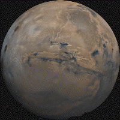
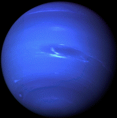

| Earth | Mars | Mecury | Neptune | |
|---|---|---|---|---|
| Images of ?? | |
 |
|
 |
| Fact #1 about Earth | Earth has no ring system. | Has a Global Magnetic field. | Has 1 Moon. | Has 1 Natural satellite. |
| Fact #2 about Mars | Mars has no ring system | Has 2 Natural satellites | The satellites are Phobos and Deimos | The Black-body temperature (K) 209.8 |
| Fact # about Mecury | Mercury has no ring system. | Has no Natural satellites. | Its discovery date is Prehistoric. | The atmosphere of Mercury is a surface bounded exosphere, essentially a vacuum. Values for some species can vary with local time or location, these are given as ranges. |
| Fact #4 about Neptune | The Mass of Neptune is 102,409kg. | It has 14 Natural Satellites. | Neputne is a planet with a ring system. | The discoverer was Johann Gottfried Galle. |
| Fact #5 | ??? | ??? | ??? | ??? |
| Fact #6 | ??? | ??? | ??? | ??? |
| Fact #7 | ??? | ??? | ??? | ??? |